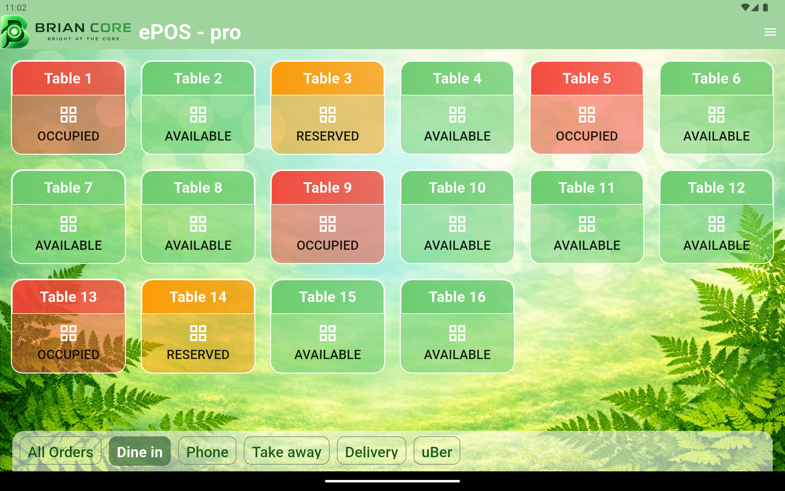

Giải pháp quản lý bán hàng ổn định, linh hoạt và được thiết kế cho môi trường vận hành thực tế.
Trong hoạt động kinh doanh nhà hàng, quán café hay cửa hàng bán lẻ, điều quan trọng nhất không phải là phần mềm có bao nhiêu tính năng. Điều quan trọng là khi khách hàng cần thanh toán thì hệ thống vẫn phải hoạt động ổn định, nhanh chóng và đáng tin cậy.
Đó là lý do BrianCore ePOS được xây dựng.

Khác với nhiều hệ thống POS phụ thuộc hoàn toàn vào Internet và Cloud, BrianCore ePOS được thiết kế theo triết lý Offline‑First.
Toàn bộ quá trình bán hàng, xử lý đơn hàng và lưu trữ dữ liệu được vận hành trên hệ thống cục bộ. Internet chỉ được sử dụng cho các chức năng như kiểm tra bản quyền hoặc một số tác vụ quản trị.
Điều này giúp giảm sự phụ thuộc vào kết nối Internet, đồng thời giúp doanh nghiệp chủ động hơn trong việc bảo vệ dữ liệu khách hàng và dữ liệu kinh doanh.
Phiên bản miễn phí vẫn cung cấp đầy đủ các chức năng cần thiết cho những quán ăn nhỏ, quán café nhỏ hoặc các cửa hàng kinh doanh gia đình.
Mục tiêu của BrianCore ePOS không chỉ là một sản phẩm thương mại, mà còn là một giải pháp công nghệ dễ tiếp cận hơn cho cộng đồng kinh doanh nhỏ.
📍 Hiện đang được triển khai tại VietThai Cuisine – Hastings, New Zealand
🚀 BrianCore ePOS
Smart. Reliable. Offline‑First.
Được xây dựng bằng Flutter cùng niềm đam mê tạo ra những sản phẩm phần mềm thực sự hữu ích cho người dùng.